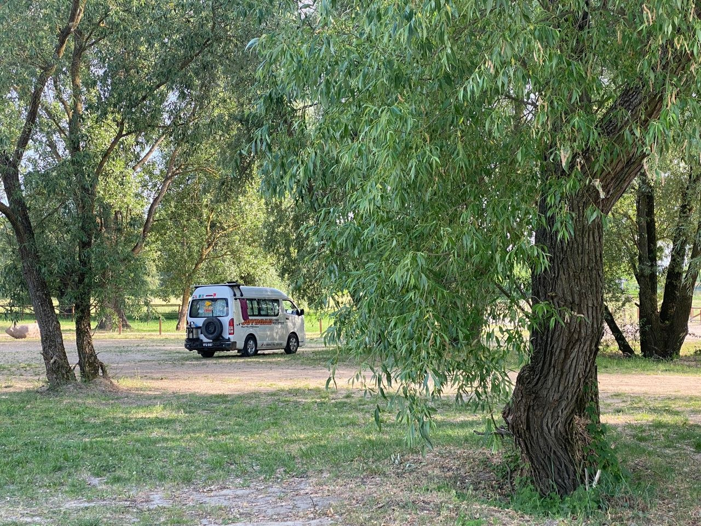
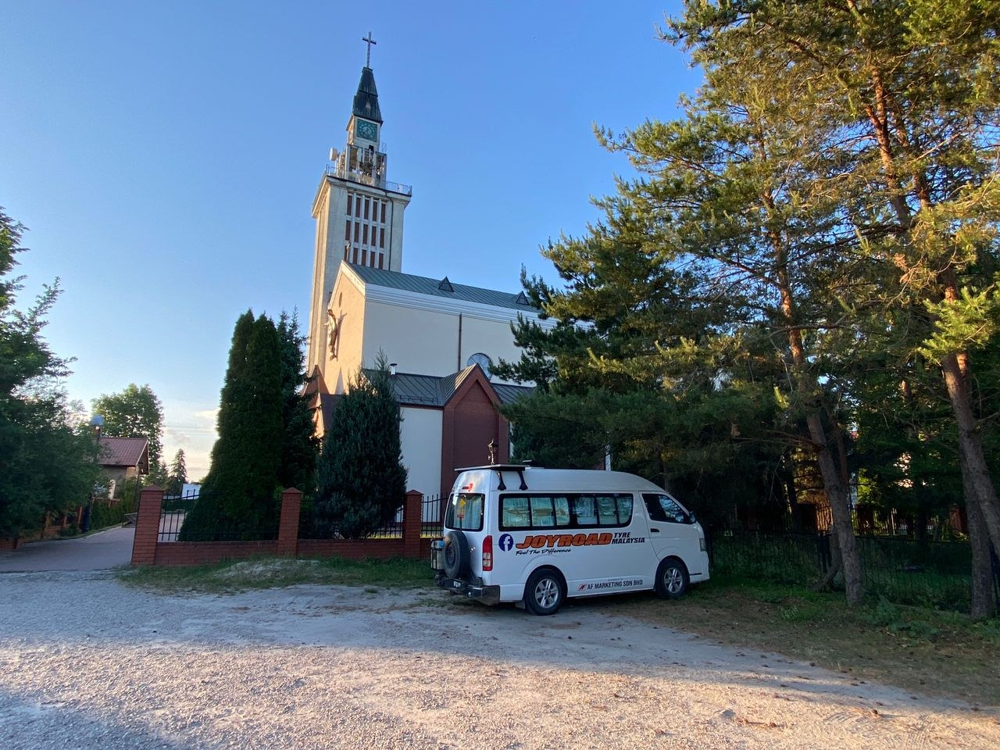
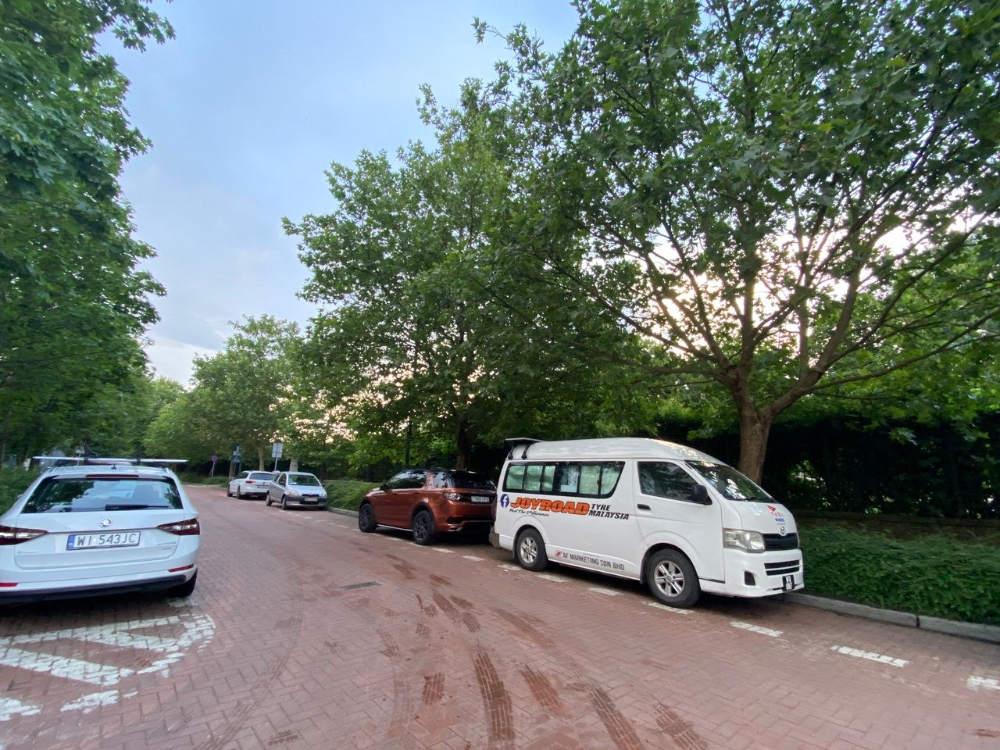

Real Story · 中文
Before Leg 3, the Russia route was not simple.
在确认第三段 route — Russia → Kazakhstan → China — 之前， 我知道普通 Russia visa 很难申请， 需要很多 documents，也需要 proper invitation。
所以我在 overland WhatsApp group 问， 也问我的 China agent Bing。 后来有人介绍了一个 Belarus-route fixer。 他也常常在 travelling group 里面 post advertisement。 我付了 EUR 160，请他帮我准备 via Belarus 的安排。
但 14 May，Bing 在 group 里面提醒大家， 不要再继续跟那个 Belarus-route fixer 做安排。 当时 group 里面已经出现一些 unresolved complaints 和 doubts， 只是 overlander 很多人不太愿意公开讲， 因为怕被笑、怕丢脸、怕被说自己笨。
更夸张的是， 当他被踢出 group 后， 他还 fight to be added back。 他的 defence 不是拿出一条真正可行的 route， 而是在 group 里反击说： “No proof saying I am scamming.”
这也是这种灰色 route scam 最麻烦的地方： 只要没有人愿意把 failed attempt 公开讲出来， 对方就可以一直用 “no proof” 来挡住 warning。
Overlander group 里面很多是 male。 有些人被骗了也不想公开， 因为怕被笑、怕丢脸、怕被说自己笨。 这种沉默，反而让不清楚的 route 和灰色 agent 有空间继续存在。

The Decision
“Let me go and test it.”
我打电话给 Bing。 我说没关系，让我去 Belarus 试。 如果真的不能从 Belarus 进入 Russia， 那我就用自己做例子公开， 让其他 overlander 不要再踩同一个坑。
我还跟 Bing 说： “Because Tuzi is a female, if a female exposes that we were cheated, maybe no one will laugh at us.”
这句话有点 lol， 但背后是真的。 很多 scam 不是靠高明技术活下来的， 而是靠受害者的 shame 活下来的。

1/6
The Belarus route failed.
1 June 2024，我 drive to Belarus。 当然，I could not enter through that route. The route did not work for me.
我立刻回到 Poland， 然后在 WhatsApp group 公开说明我的 failed attempt。 之后那个 Belarus-route fixer 被踢出 group。
我没有去 Belarus only to enter Russia。 我是去 test the truth。 如果 route failed， my failed crossing could become proof for the group.
Plac Zabaw Park Parking
The funny part: the real e-visa opened from a Polish parking lot.
很 funny 的是， 1 June 当我回到 Poland， overnight at Plac Zabaw Park Parking， 我反而可以立刻 submit Russia e-visa application。
只是有一个 condition： 只能从指定的 border customs 进出。 这个 restriction later caused me many unforgettable memories.
1/6 和 3/6，我 overnight at Plac Zabaw Park Parking， 等 Russia e-visa。
2/6 – 3/6
Russia Embassy, and the advice to stick to e-visa.
2 June，我 overnight at New Playground in the Royal Łazienki Park roadside parking， 因为 3 June morning 要去 Russia Embassy 找 solution。
Embassy staff 很 surprise， 因为 no one asking travel to Russia lately， especially after Covid。 他们也 advice me to stick back to e-visa， 只是一定要注意指定的 entering and exit customs。

English Memory Summary
Leg 3 began with a failed route, a public warning, and an e-visa.
Before beginning the third leg back through Russia, Kazakhstan, and China, Tuzi tried to verify a Belarus-route arrangement sold through overlander contacts. After driving to Belarus on 1 June 2024 and failing to enter through that route, she returned to Poland and posted her failed attempt in the overland group as a warning.
The surprising turn came on the same day: from Plac Zabaw Park Parking in Poland, she was able to submit a Russia e-visa application. The e-visa path came with a strict condition — entry and exit only through designated customs — and that condition would shape the next unforgettable section of the journey.
Heart Statement
第三段不是从成功入境开始，而是从验证失败开始。
Leg 3 did not begin with a clean border crossing. It began with a failed route, a public warning, and a quiet Polish parking lot where the real Russia e-visa door opened.